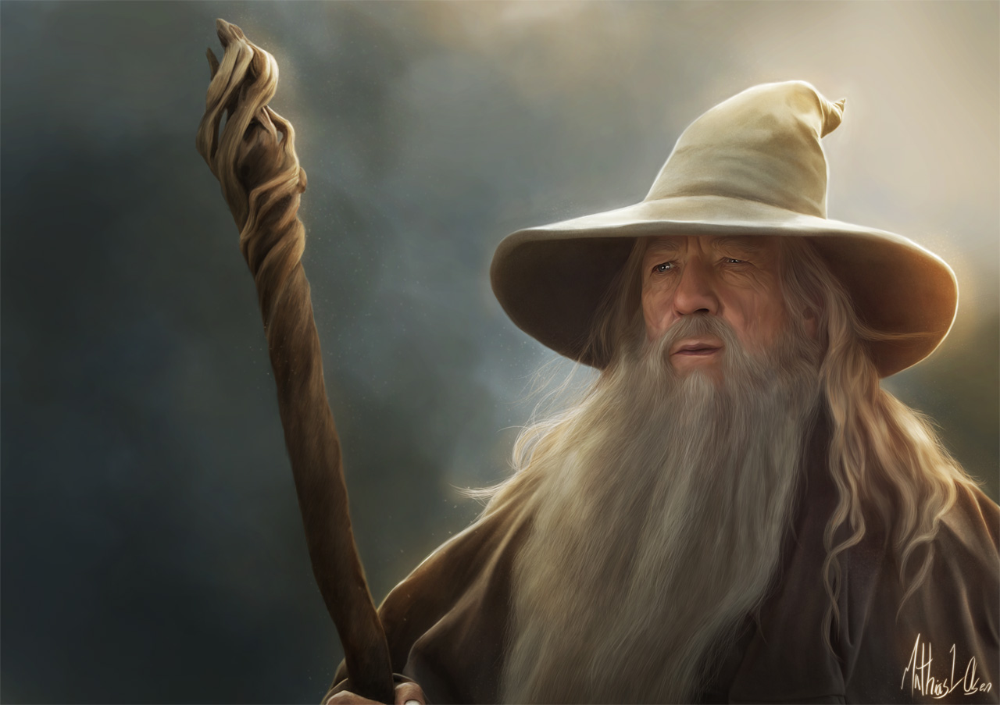

Gandalf el gris
Conoce más de nuestro personaje favorito

Algunas de las frases populares de Gandalf, "No es importante saber cuánto tiempo queda, sino qué hacer con el tiempo que se te concede.". Si quieres conocer mas frases, haz click aquí
Más sobre Gandalf
Conocido también como
- Mithrandir
- Incánus
- Tharkûn
- Olórin
Admeás de Gandalf, quienes formaron parte del Concilio Blanco
- Saruman
- Radagast
- Elrond
- Galadriel
- Círdan
- Arahad I